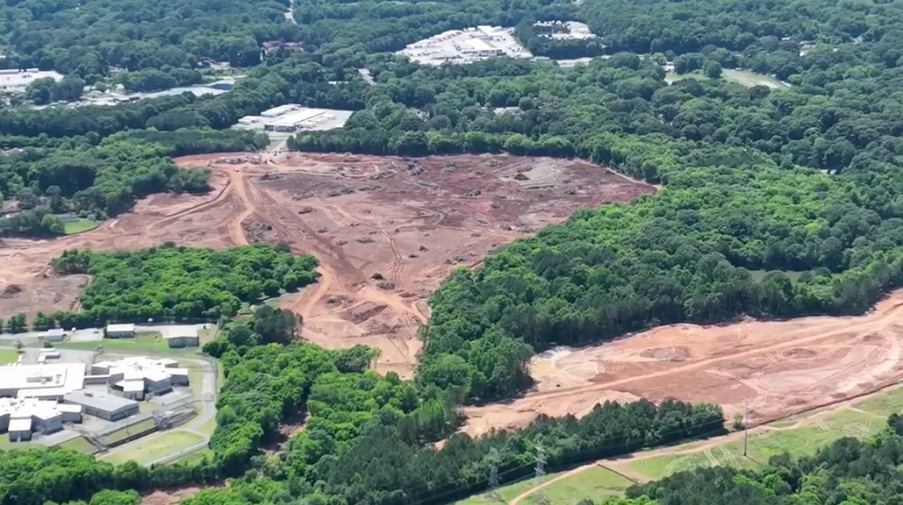
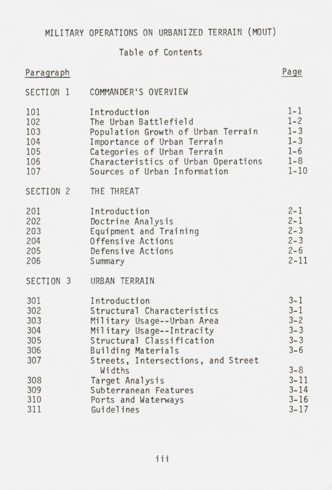
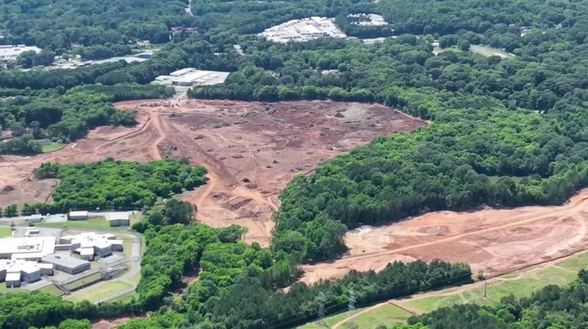
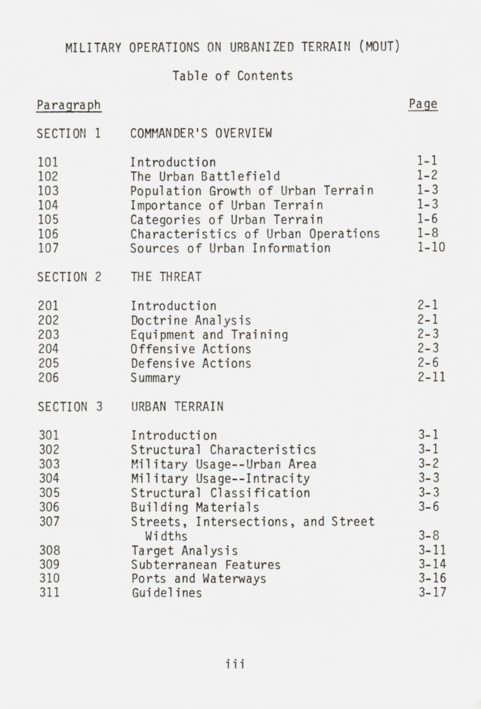

Learning from our protracted struggle for liberation
The interconnected and enduring systems of oppression that we as Afrikan people have been subjected to has yet to strip us of our agency to resist and upend, to build and (re)imagine. It is this enduring spirit that, across scales, generations, and geographies, has given rise to a multitude of profound and transformative political and spatial experiments–so many of which are undergirded by a collective indomitable will to determine our lives and the futures of our communities, on our own terms.
Jackson, MS
Land Liberation
Where and how we build: Exploring revolutionary praxis through land liberation and alternate institutions


Birmingham, AL
Carceral Continuum
Where and how we break: Tracing how Alabama’s prison industrial complex manifests in everyday life

Atlanta, GA
Urban Warfare
Understanding how previous themes take shape within a metropolitan context, specifically looking at “Cop City”
 


